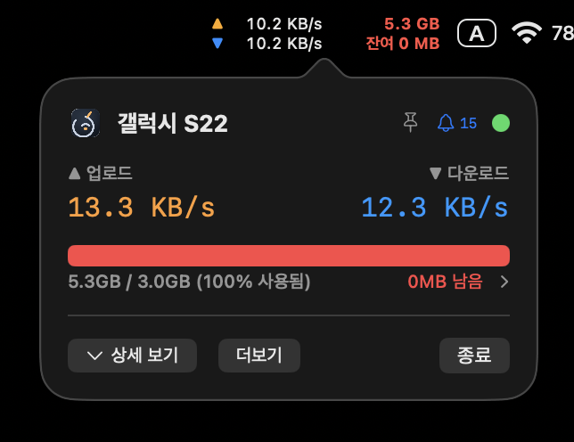
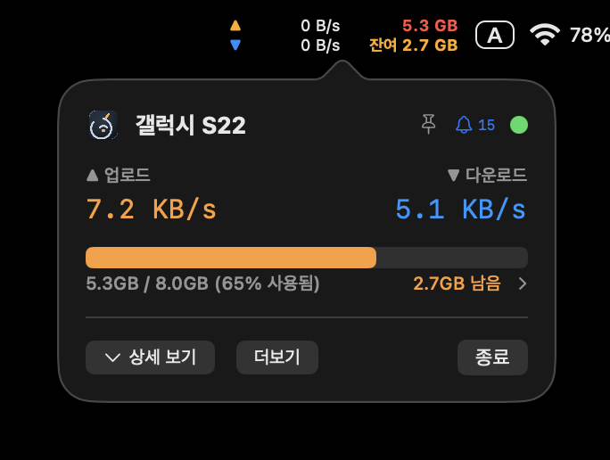
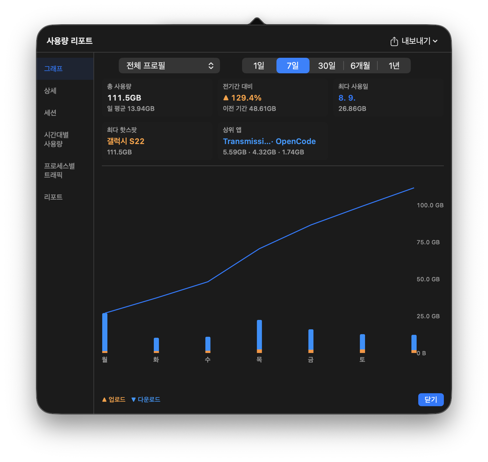

테더링 데이터,
어디로 새는지 보여.
메뉴바 하나로 핫스팟의 소중한 GB를 경호하라.
실시간 속도 · QoS 소진 예측 · 앱별 낭비범 추적.
최초 실행 경고 시 → xattr -rd com.apple.quarantine /Applications/TetherLens.app
비용이 곧 삶의 질인 사람들을 위해
핫스팟 한 줄 한 줄이 경제입니다. TetherLens가 현황을 밝힙니다.
메뉴바 실시간 속도
▲▼ 업·다운을 두 줄로 표시. 상태색(초록→빨강)으로 할당량 압박을 직관화.
핫스팟 자동 감지
iOS ↔ Android 테더링 구분, SSID 기반 프로필 자동 전환.
QoS 방지 게이지
오늘 사용량 vs 할당량. 50/80/95/100% 임계선 도달 시 알림.
소진일 예측
지금 페이스면 언제 바닥나는지 대시보드 카드로 예측.
대시보드 인사이트
총/일평균 · 전기간 비교 · 최다 사용일 · 상위 앱. 상황이 보인다.
GPS/IP 위치 추적
연결 위치 지도 핀과 이동 이력 타임라인으로 내 사용 경로를 확인.
연결 품질 모니터링
DNS+게이트웨이 Ping RTT. 지속 위반 → 경고, 복구 자동 감지.
스마트 절약 모드
핫스팟 감지 시 softwareupdate·TimeMachine off, Apple 업데이트 서버 차단.
DNS 프리셋
1.1.1.1 / 8.8.8.8 프리셋을 시스템 네트워크 설정에 즉시 반영.
앱별 트래픽 순위
nettop 기반 — 어느 앱이 얼마나 쓰는지 실시간 소비범 명단.
배터리 마니아
슬립 시 폴링 중지, 팝오버 닫힘 시 tick 중지, 타이머 tolerance로 전력 최소화.
네이티브 & 프라이버시
Swift 6 / SQLite 로컬 저장. 데이터는 내 맥 안에서만.
설치하고, 연결하고, 지켜보세요
두 번의 클릭으로 감시 카메라가 켜집니다.
설치
GitHub 릴리스에서 다운로드 후, 터미널에서 Gatekeeper 경고를 해제하고 실행합니다.
핫스팟 연결
iPhone/Android 테더링을 켜면 SSID 기반 프로필이 자동 등록되고 절약 모드가 준비됩니다.
실시간 감시
메뉴바에서 속도·사용량·QoS 게이지를 확인하고, 앱별 낭비범을 추적합니다.
직접 보세요
팝오버와 리포트, 실제 모습 그대로입니다.


